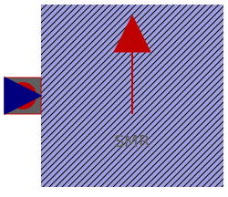

| Name | Description |
|---|---|
| ThermalAmbientSMPM | Thermal ambient for synchronous induction machine with permanent magnets |
| ThermalAmbientSMEE | Thermal ambient for synchronous induction machine with electrical excitation |
|  ThermalAmbientSMR | Thermal ambient for synchronous induction machine with reluctance rotor |